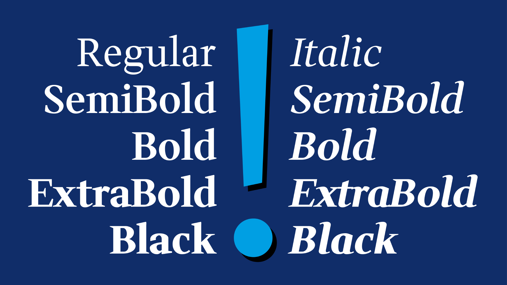
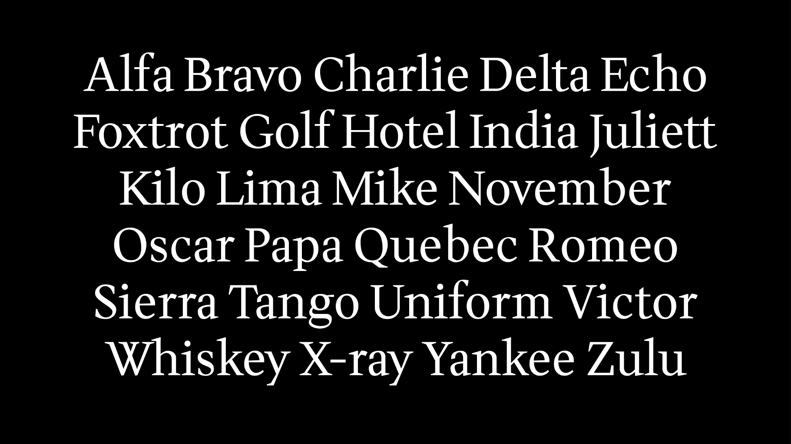
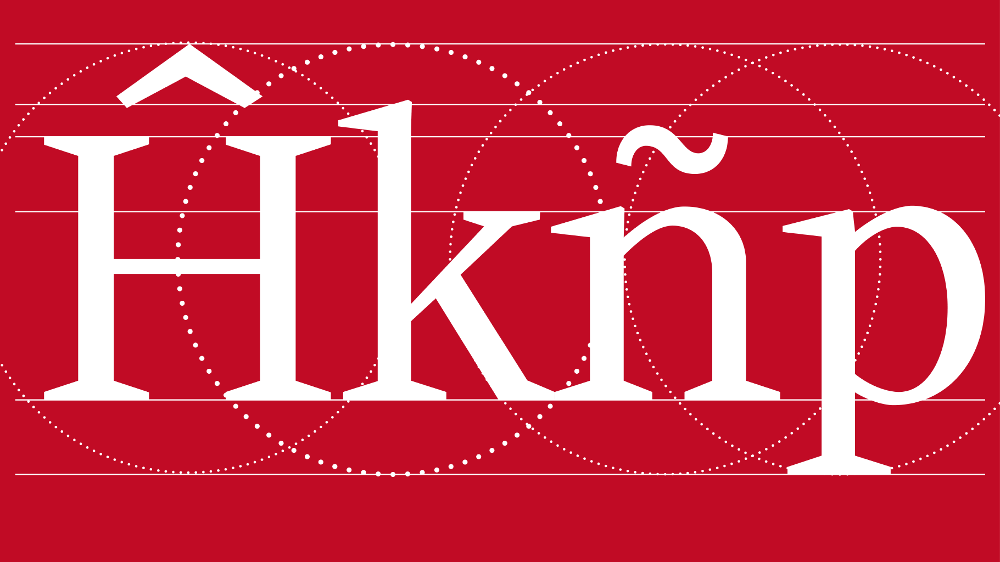
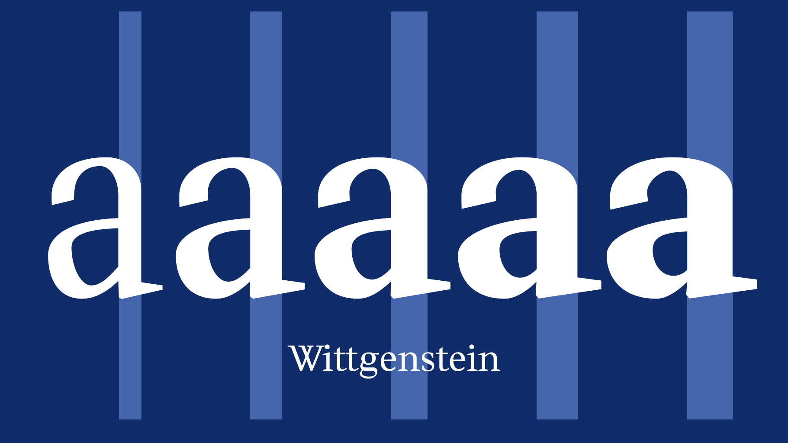
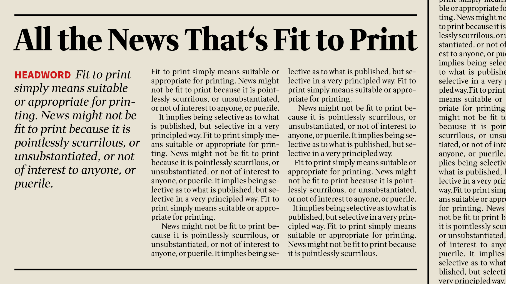
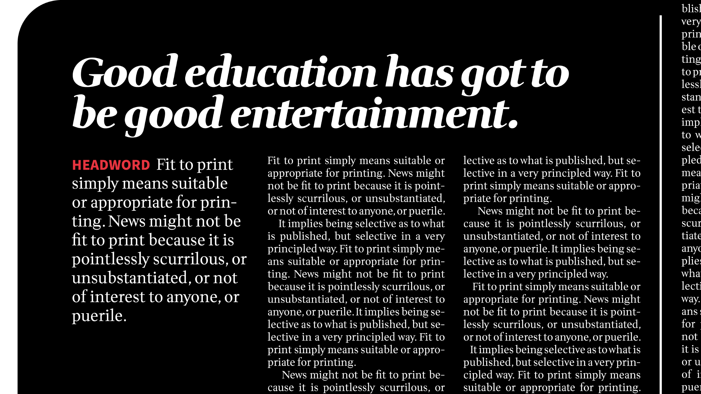
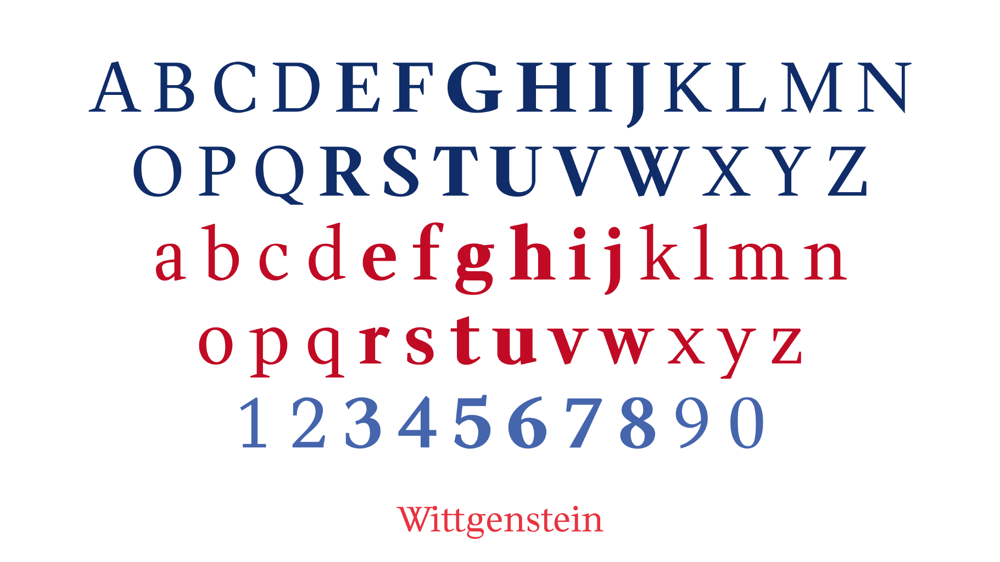
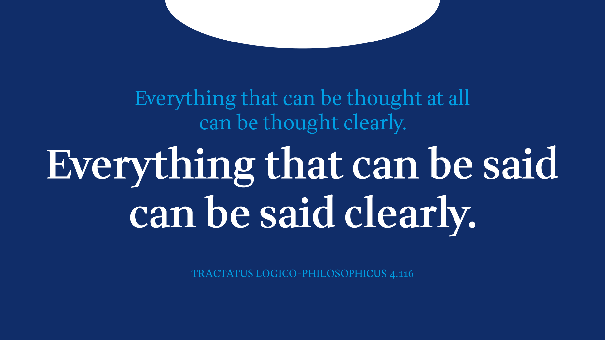

The font interprets the serifs with clear, sharp forms. Based on the quote from Ludwig Wittgenstein that what can be said can be said clearly, it bears his name. The style consists of a normal and a bold version, which can be expanded over time.
To contribute, see github.com/jrgdrs/Wittgenstein.
Introducing Wittgenstein, a typeface that redefines serif typography with clarity and sophistication. Inspired by the philosophy of Ludwig Wittgenstein, who recognized that what can be said can be said clearly, this font embodies his ethos with its sharp, well-defined form.
 Clarity in Design: Each letter is meticulously crafted with clear, sharp serifs that are more than just decorative—they command attention.
Versatile Styles: Available in five weights, from Regular to Black, and in italics, Wittgenstein adapts to any project. Its variable fonts with weight axis provide flexibility for diverse design needs.
Historical Elegance: This modern interpretation of Georg Trump's Mediaeval Old Style font and Walter Diethelm's Antiqua from the 1950s offers a broad-nib touch with contemporary flair.
Exceptional Readability: Ideal for high-volume texts and bold headlines, Wittgenstein ensures high readability and clarity, whether on digital screens or printed materials.
Wittgenstein is an ideal choice for editorial layouts, corporate branding, or any design requiring a sharp, professional edge. It effortlessly blends modern aesthetics with timeless elegance, making it a versatile addition to any designer's toolkit.
Embrace the precision and beauty of Wittgenstein Font, and elevate your design projects with Wittgenstein's distinctive charm.
